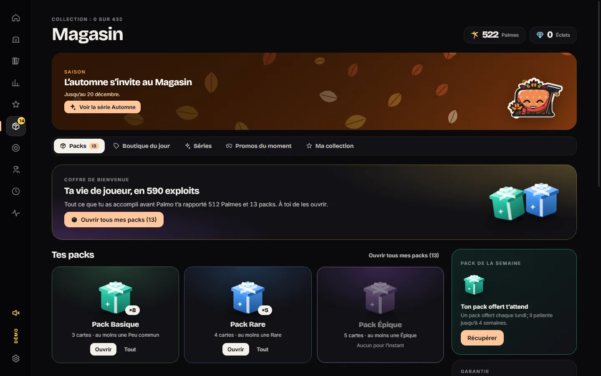
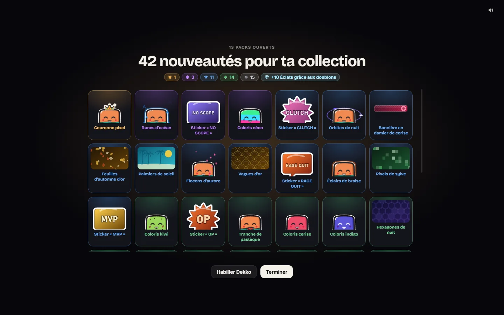
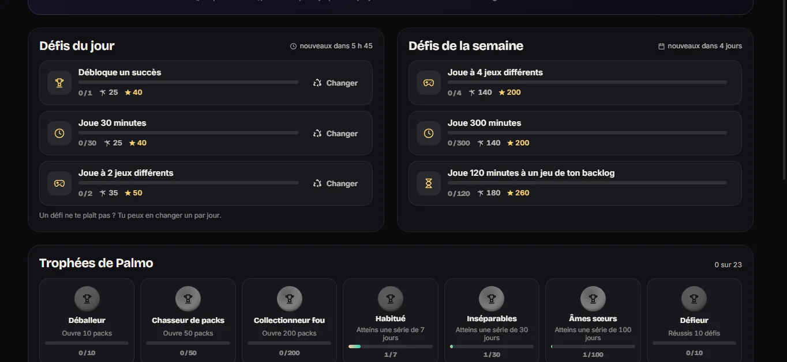

Il grandit avec tes succès
Raretés, jeux finis à 100 %, genres joués : Dekko gagne des niveaux, une classe, des traits et des titres.
Dekko est un petit cube qui vit sur ton bureau. Il grandit avec tes vrais exploits Steam, s’habille de ce que tu débloques et te raconte ta vie de joueur.
Tout ce que fait Dekko vient de tes vraies parties. Pas de temps à tuer, pas de grind : ce sont tes succès qui comptent.
Raretés, jeux finis à 100 %, genres joués : Dekko gagne des niveaux, une classe, des traits et des titres.
Chapeaux, costumes, ailes, auras, coloris, émotes : de quoi l’habiller pour toutes les saisons.
Halloween, Noël, Pâques, l’été… Des séries limitées et une boutique qui change chaque jour, tout en Palmes gagnées en jouant.
Des défis du jour, une mission du soir dans ton backlog et un passe de saison gratuit.
La Genèse retrace toute ton histoire Steam au premier lancement. Statistiques, jeux presque finis, cartes à partager.
Dès qu’un jeu se lance, Dekko se cache et Palmo ne fait plus rien. Tes performances restent intactes.
Captures faites avec le profil de démonstration de Palmo.



Une seule installation. Les mises à jour arrivent ensuite toutes seules.
Un installateur Windows classique, sans compte à créer.
Maître Gélatin te guide pas à pas pour récupérer ta clé personnelle, gratuite.
La Genèse lit toute ta vie de joueur et ton Dekko prend vie sur ton bureau.
Palmo n’a pas de serveur. Il parle seulement à Steam, avec ta propre clé.
Oui. Pas d’abonnement, pas de publicité, rien à acheter. Les Palmes se gagnent uniquement en jouant.
C’est normal pour une petite application récente. Clique sur « Informations complémentaires » puis « Exécuter quand même ». Les mises à jour, elles, sont signées et vérifiées par Palmo.
C’est ce qui permet de lire tes succès et ton temps de jeu. Elle est gratuite, personnelle, et ne quitte jamais ton PC.
Non. Pendant une partie, Dekko se cache et Palmo met en pause son affichage et ses accès réseau.
Palmo n’existe que pour Windows pour l’instant.
Télécharge Palmo une fois, il se met à jour tout seul ensuite.